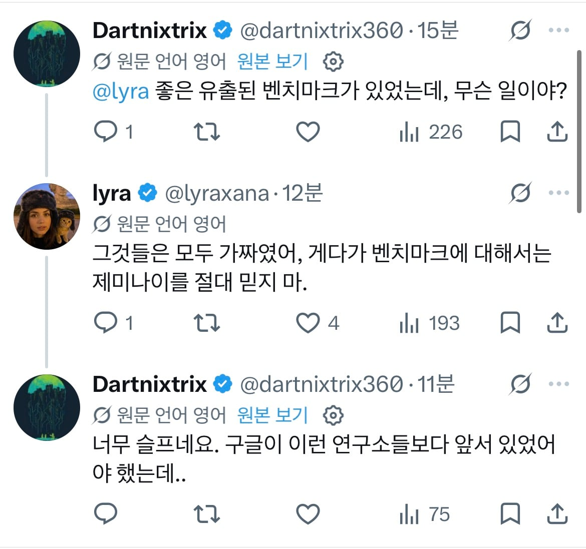
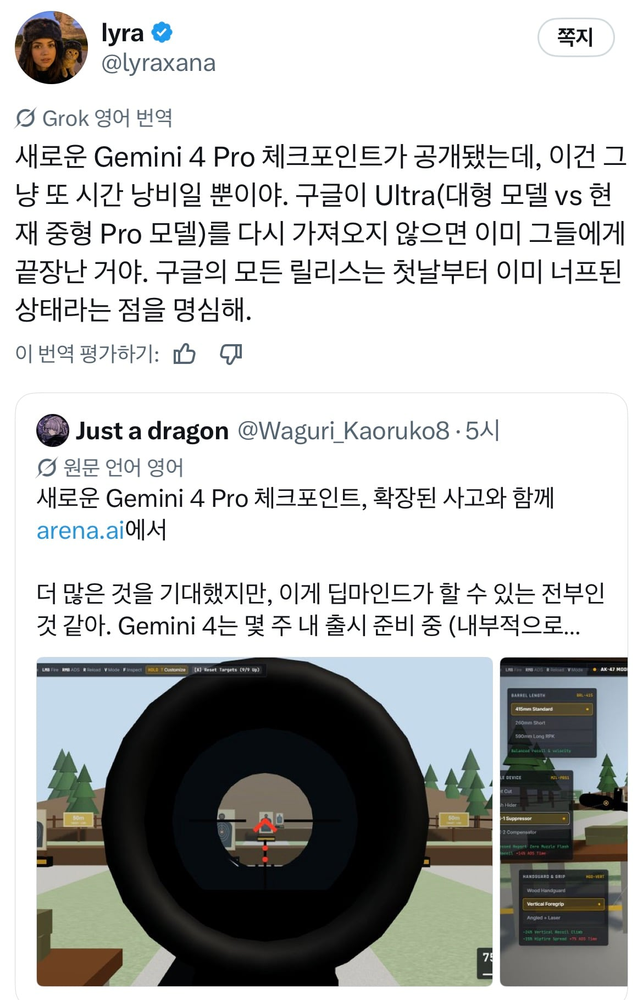

요새 타율이 제일 좋다는 lyra


이게 만약 사실이라면 구글은 프론티어 모델 경쟁에서 완전히 탈락했다고 봐도 될듯..
사실 이게 이렇게 된 이유가 오픈ai와 앤트로픽은 코딩에 뾰족지능을 달성하면 나머지도 자연스럽게 결국 좋아진다 and 코딩 기능으로 자사 모델을 재귀개선 시킬수 있다고 코딩으로 밀어붙였고 구글파는 월드모델을 통해 모델 자체가 똑똑해져야 한다면서 월드모델쪽을 팠는데 구글이 완전히 틀렸다는 말이 되는거기도 함..
제미나이 너무 사용자 친화적이어서 사용자가 원하는 답 만드려고 수치나 근거 구라 존나 침